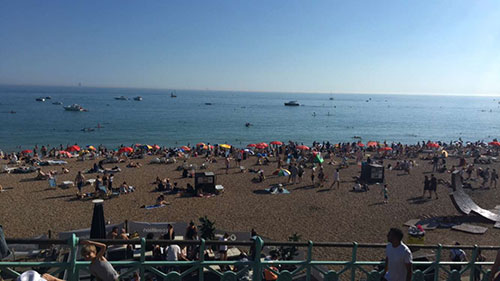

The beach of Brighton is a very unique and well-known place. It draws many tourists in daily to experience its vibrant atmosphere and countless attractions on and around it. Although it may be a place that can't be visited all year round, there is still a great appeal in the colder seasons with the view that spans the vast sea.

This is what the beautiful beach looks like on a hot summers day; hundreds of people stretching across the entire beach from Portslade (West) to Eastbourne (East) to enjoy the sun, the sea and the snacks offered by the local shops and stalls.
I live locally, I was born here thus have lived here my entire life, and over the years have spent a lot of time at the beach. I find it an extremely calming and tranquil place. It is great for not only enjoying yourself or meeting up with people but also for just having a place where you can get away from any stress that comes with life. The sound of the sea and the view that it provides is very relaxing. It is a place that you can plan to go to for a short period of time but end up being there for hours on end as it is extremely easy to lose track of time while you are here.
FINDING THE BEACH
The beach is incredibly easy to find, just head south from wherever you are! The more popular areas of the beach are closer to the town centre. The town centre can be travelled to via any bus route as they all go through town. There is also a train station in the centre. As you exit the train station there is a long hill that leads directly to the beach, it is impossible to miss!
As shown above; if you are walking from the train station then simply walk down Queen's Road, which then carries on becoming West Street. If you are at the shopping centre there is a road heading east, you should see a clock tower. This road connects to Queen's Road/West Street where you will easily find your way to the beach.
The pier is a great place to visit often when living in Brighton and a must to check out when just visiting the city. There are many attractions on the pier that keep people on there for hours. These include:
There are many passes that can be bought in order to make a day at the pier more exciting and cheaper. A special wristband is purchased that grants you access to all the rides for the entire day. These rides can range from slower, steadier rides for younger ones to faster rollercoasters.
From my personal experience, The Pier is very similar to the beach in terms of how calming it can be. Having the elevated view of the sea is incredibly relaxing and proves to be a great location to spend some time alone or be a meeting point for friends. The food offered here tastes great and can be found anywhere throughout the entire length of the pier. The places to eat include restaurants, bars and kiosks where you can find a large variety of different foods, my favourite of which is the Fish and Chips, although the doughnuts are always tempting!
FINDING THE PIER
The Pier, much like the beach, is very easy to locate. If you're on the beach, then chances are you can see the Pier from there. It is very close to the town centre and only requires you to turn left at the bottom of the previously mentioned West Street.
As shown above; the pier is very close to area of the beach that I presented in the previous section. The entrance to the Pier is next to the Sea Life centre, there is a huge sign that displays "Brighton Pier", you can't miss it!
THE I360
The British Airways i360 is a new attraction to Brighton. It officially opened on the 4th August 2016 after costing £46.2 Million and taking 10 years to build. Plans to build the i360 were created in 2006 with the building process starting in 2008. The construction began off-site where sections of the tower where built before bringing them to Brighton and starting on-site construction in 2014. The following 2 years were to allow the tower to be properly constructed, making sure the tower was working properly, safe and finally finding employees to work in and around the tower.
The i360 allows for a slightly higher up view of Brighton. It is open all year round and allows a '360' view of Brighton from 162 metres up! The i360 is also very conveniently placed by connecting to the beach itself. The direct surroundings are restaurants and, obviously, the beach. However, if you're looking for more to do, the i360 isn't far from the town centre.
Many different events are hosted on the i360, the majority of which are for seasonal holidays such as Christmas. It can also be rented out for private use if you're throwing a party or something similar to celebrate. Near the lobby of the tower there is a gift shop and a restaurant. This makes a visit to the i360 something that you can make a day of rather than just a trip on the tower itself. Furthermore, the prices of the tickets won't set you back that much!
Ticket Type
Price
Price (Booked 7 hours in Advance)
Adult (16+ years)
£16.00
£14.40
Senior 60+ / Student
£13.50
£12.15
Child (4-15 years – under 4s go free)
£8.00
£7.20
Resident Member
Adult 16+: £8.00
Child 4-15 years: £4.00
FINDING THE I360
The image below displays directions to the i360 from Brighton Train Station. Compared to the Pier or the area of Brighton Beach that I displayed, the i360 requires 10-15 minutes of walking. However, the route via the seafront is very scenic making the walk a pleasant one. To get to the i360, simply head towards the beach, similarly to if you were going to the Pier. Once at the beach, head west and you shall see the i360 from where you are. It is hard to miss from there!